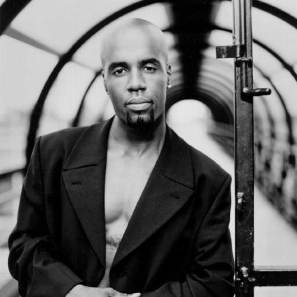

Aaron Hall
Aaron Robin Hall III is an American singer and songwriter. Hall joined the R&B and new jack swing group Guy in 1988, which was formed by Teddy Riley and Timmy Gatling, who was later replaced by Hall's brother, Damion. The group's self-titled debut album (1988) was met with commercial success; Hall provided lead vocals on its songs "Groove Me," "I Like," and "Piece of My Love", among others.
Complete Discography & Tracklists (4)